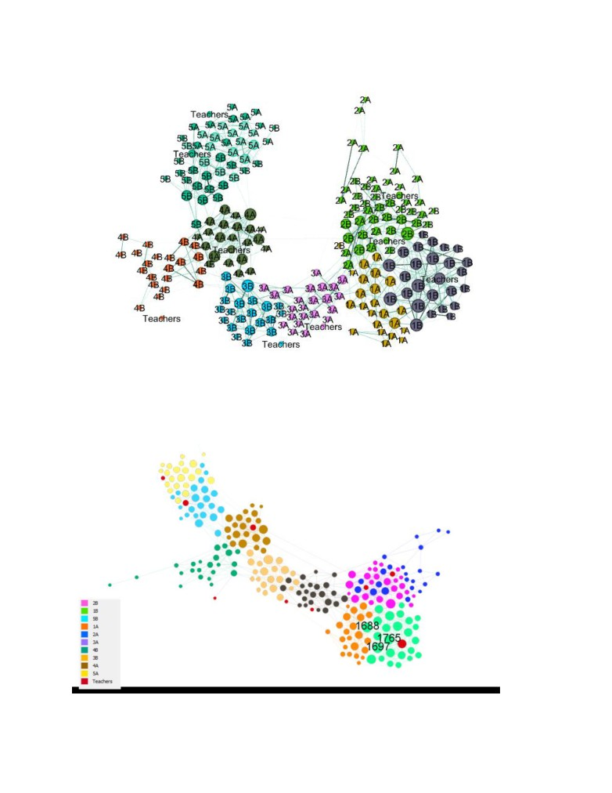

Study of Interaction Patterns in Primary School Children Network
By Utsab Shrestha
Introduction
Human interactions and human behaviors has been a fascinating and challenging subject of study in
recent times. Social network companies, consumer markets, medical industries have been trying to
study human behavior to predict the consumer needs, recommend goods, optimize marketing
strategies, or in case of medical industry diagnose and study disease patterns. Child psychology and child
interaction behavior is very different from an adult behavior. Study of children interaction pattern is
very important to understand and improve the development of children. These studies have been used
to understand the development in children as well as spreading of highly communicable disease like
influenza, hepatitis and measles. Children are prone to these diseases and the pattern study of
interaction of children helps to find the propagation and evaluation of the control measures of these
diseases. Through this study, we want to find how age, gender, grade affect the interaction pattern in
children.
Data
Data for this project was obtained from the Socio patterns website (sociopatterns.org). The dataset had
two networks, one for each day, of face-to-face interaction between students and teachers. These
interactions were collected from a French school in 2009 using radio frequency identification devices
that recognizes an interaction by proximity sensors. The students involved in the data are ages 6 to 12
attending grades 1 to 5. There were 232 children and 10 teachers who were involved in 77,602 contacts
amongst each other in course of two days. There were 10 classes, grades 1 to 5 with section A and B,
and in each grade, there were around 25 students. In average, each child had around 165 interactions
and spent an average of 176 minutes in interaction per day. The gender and grade were provided for
the children and also the count and duration of interactions were provided. For a contact to occur
between two individuals, they must be in certain proximity for at least 20 seconds. A packet of
information is sent after every 20 second. A contact is broken once they are further than the defined
proximity and if they come in contact again new contact is added and time is added to previous
duration.
The data file obtained from the website were in gexf gephi format, one file for each day. There were
couple of data manipulation and data transformations required on the original data. Once imported into
gephi and data exploration, the edge and node tables were exported into csv files which were imported
in R for network analysis. The edge weight was calculated using the duration and number of contacts. In
average, a contact was around 200 seconds so for each edge, duration of contact was divided by 200
seconds and multiplied by number of contacts and log value was taken since the range was high. Also a
new variable of Age was added based on which grade the student were in.
The raw dataset was undirected graph with over 10,000 edges. The dataset was filtered for weights
above 1 to use edges with higher significance and make visual analysis easier. Singleton nodes were
removed. After preprocessing there was significant fall in degree shown in two figures below. Before
preprocessing the degree range was from 0 to 83 and after filtering and removing the singleton nodes
the degree ranged from 1 to 25.
Analysis
Analysis for this project was focused on finding patterns of interaction by grades and gender. We want
to check if the students show homophile behavior, if different gender students associate will, and who
are the most and least interactive grades.
Over the course of two days, grade 1B had the most interactions. Comparing to the other section, the
same grade (1A) students had half the number of contacts. Teachers seem to have the least contacts
and among the classes grade 4B had the lowest number of contacts.
The heatmap above shows the number of edges (interactions) between each grade. Higher number of
interactions between same grades are seen which is defined by the lighter gradient diagonal in the heat
map. In case of grade 5, interaction between grade 5A and 5B students were more than students of
their same class. Similarly grade 3B students had more interactions with 3A students than of their own
class. We can see some signs of homophile behavior since most students interact more with students of
same grade.
In terms of degree distribution by grade, grade 2A has high degree in day 1 and there is a huge
difference in their degree distribution from day 1 and day 2. Grades 1B seemed to have high degree on
both days so they showed some consistency while grade 4B seemed to have low degree distribution
overall.
Above graph shows that there is not much difference between the degree distribution between male
and female students with male students showing a little higher degree than female students. The
unknowns are mostly the teachers.
Using the gephi community detection, there were 8 communities detected for both days with
modularity of 0.75. The algorithm performs well on separating communities by grades. Same grade
students form a community. This measure shows how well the network can decomposed into modular
communities. Grades 2A and 2B are in same community, grade 5A and grade 5B are in same
communities while Grades 1A and 1B, 3A and 3B, and 4A and 4B form separate communities. This also
shows sign of homophile behavior since there is high interaction between same grade students which
resulted in same grade students being in same community.
Community Detected by Gephi Modularity Algorithm

Degree Distribution of Day 1 network
Degree Distribution of Day 2 network
Day 1 has high degree nodes in grade 1B while Day 2 has high degree nodes in grade 2A and 5A.
Day 1 Network Centrality Measures
Day 2 Network Centrality Measures
The node centrality correlation of day 1 and day 2 look very similar. We see the highest correlation
between weighted degree and page rank in both days. This indicates that the students who had the
most number of interactions (high degree) are also the most important nodes in the network. In some
cases, low degree nodes can have high page rank if the indegrees are from high degree nodes. There is
also some correlation seen between weighted degree and closeness centrality which means the
students with high degree have the shortest average path to other nodes.
CUP and QAP tests showed that both gender and grade display assortative patterns that suggests these
attributes were not mere products of random association. While, gender and grade both showed high
assortative with strong confidence with p-values of 0.83 and 0.93, students of same grade seem likely to
associate than students of same gender. On the figure, the assortativity by gender is scaled higher than
all the randomly generated networks. Furthermore, the assortativity of the network was confirmed by
QAP test which rearranges the nodes to check if the assortativity of the nodes were random rather than
generating random networks like in CUG tests. The CUG test validated the assortativity of the network
with high confidence of 93% and 82% for grade and gender proving that the assortativity for grade is
higher than gender in this network.
Exponential Random Graph Modelling techniques can be used to further study the interaction behaviors
in the network. In the ERGM, we can experiment with various parameters and see what they tell about
the network. While we have seen that both grade and gender determine the probability of children
interaction, the ERGM model is more applicable in showing the network behavior with high confidence.
The final model for Day 1 proved to be much better in terms of Statistical P-value and MCM diagnostics.
Even introducing high burn in computation and lowering the intervals and improving on the goodness of
fit the Day 2 model did not perform well. Final model for day 1 takes gender mixes and grade matches
into account as well as several degrees. All the parameters have low p-value which means they are
statistically significant and the AIC and BIC criteria are low compared to other models.
The goodness of fit diagnostics shows that the parameters all perform well with observed network
denoted by the thicker line that fall within the simulated network quantiles. The degree distribution also
follows the general path of the observed network. It is seen that degree 5 and degree 6 fall outside the
simulated network but they do ascend like the observed network. When trying to introduce the degree
5 and degree 6 parameters to the ERGM model, AIC increased and the p-values for the statistical
significance were not available. The sample statistic showed auto-correlation with high value which is
not good showing the simulated networks had correlation, the individual and joint p-value was high
which tells that the model performed well.
Using the model parameter coefficients, the conditional probability of specific type of edges being
created can be determined.
EDGE CASE
CONDITIONAL PROBABILITY
EDGE between same Grade student
56%
EDGE between Male-Male student
1.8%
EDGE between Male-Male student
1.6%
EDGE between Female-Male student
0.8%
Conclusion
The model strongly supports our analysis of homophile behavior in students interacting between same
grade student. After that they would be more inclined to same gender. The children do not have the
same mentality and relation towards the opposite sex as adults, so they would probably behave
differently than an adult would. The analysis on the network data provides important insights into child
interaction behaviors. Through the contact counts, degree distribution, modularity community
detection, QAC and CUP tests, network visualization, and ERGM modelling we can see that children
show homophilic behavior which means they are more likely to interacts with someone like themselves
be it the grade, age or gender. In cases of disease outbreak in a school environment this information can
be of great importance in managing and controlling the disease from spreading further. If there were
more attributes available such as race, nationality, height etc. maybe we could build a better model and
have more interesting findings.